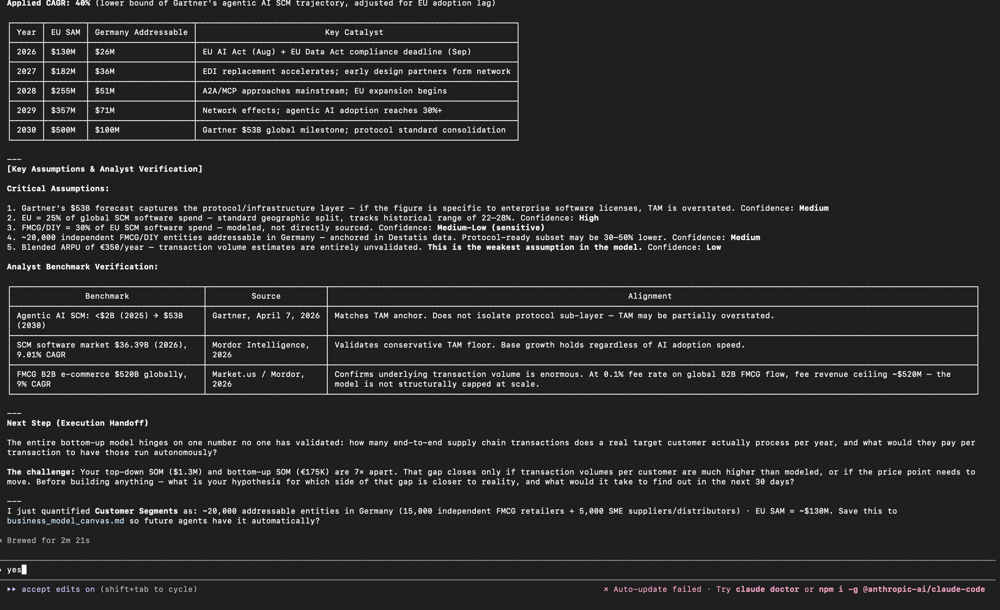

PM OS for Cursor & Claude Code
77 agents, one vault, zero theater—strategy that knows your files, not just your last prompt.
Small onboarding cohort · or jump in on GitHub with boot_os

Benchmarks and confidence called out; the handoff is a testable hypothesis—not a slide of false precision.
Four ideas. Everything else lives in the repo and docs.
Context lives in markdown in your repo—not a chat thread. The orchestrator reads before it writes.
State the problem; intent routing picks the specialist. Cursor, Claude CLI, MCP when the web matters.
Facts carry [VERIFIED] / [ESTIMATED]—so you know what you're standing on.
Weak bets and shallow moats get challenged before engineering commits.
From board-ready strategy to PRDs, opportunity trees, and launch comms—outputs land in your vault across Venture, Initiative, and Operational work.